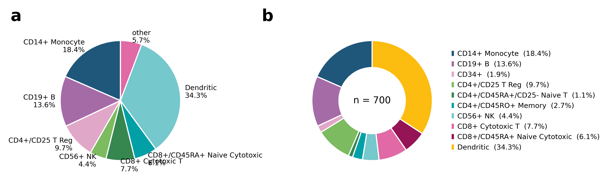
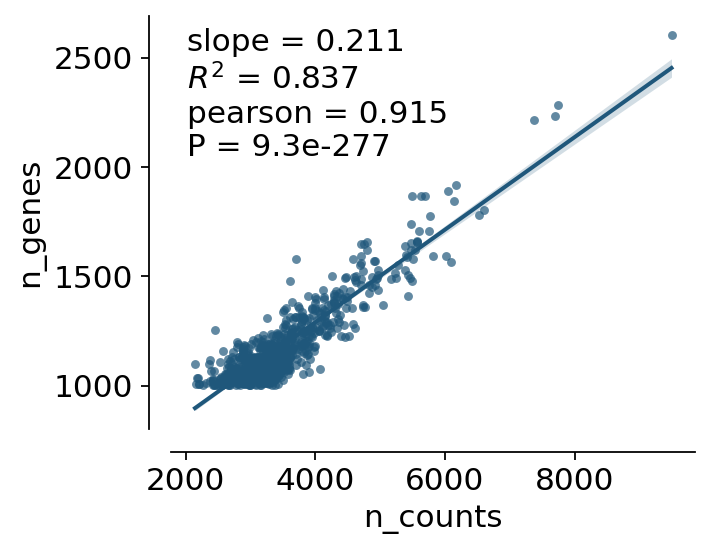
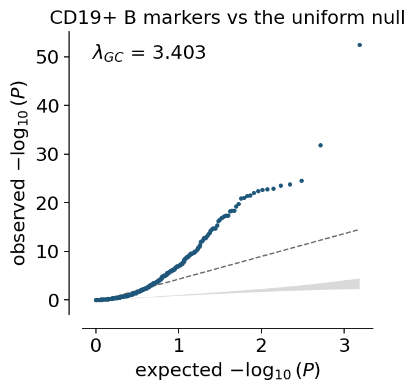
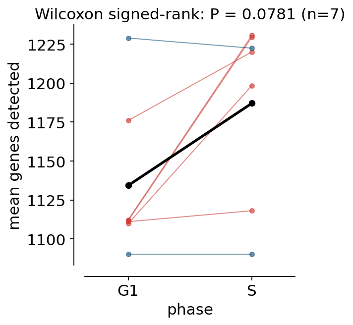

Statistical plots from a table#
Almost every plot in ov.pl starts from an AnnData. That is the right
default for an embedding or a spatial map, but it gets in the way for the
ordinary figures a paper is made of — a bar chart with a test on it, a
histogram, a ridgeline, a regression, a Q-Q plot. Those need a column of
numbers and a column of labels, and nothing else.
This tutorial covers the table-first layer of ov.pl. Every function here
takes a pandas.DataFrame plus column names, or bare arrays, or an AnnData
(in which case .obs is read) — interchangeably.
Function |
Draws |
|---|---|
|
Bars of a summary statistic, error bars, optional raw points |
|
Every observation, jittered, over a summary crossbar |
|
Kernel densities, optionally split by a two-level factor |
|
Stacked composition — counts or proportions |
|
Composition as a wedge chart |
|
Ranked values as stem-and-dot |
|
One line per subject between conditions, with a paired test |
|
Histograms — count, density, probability, stacked, filled |
|
Kernel density in 1-D or 2-D |
|
Overlapping densities, one per group |
|
Q-Q against a distribution or a second sample, with λGC |
|
y against x, with categorical or continuous colour |
|
Trends with replicate aggregation and an error band |
|
Scatter with a linear, polynomial or LOWESS fit |
|
The tests, as a tidy table |
|
Significance brackets, stacked so they never collide |
|
Let the |
The names carry a ...plot suffix on purpose. ov.pl.violin still takes an
AnnData and knows about genes and layers; ov.pl.violin takes a frame.
Nothing existing changes.
The tests are not decoration. Every plot that can annotate a comparison
routes through ov.pl.compare_groups, and hands back the same table it drew
from — so the stars on the figure and the numbers in the text cannot drift
apart.
import warnings
warnings.filterwarnings("ignore")
import numpy as np
import pandas as pd
import scanpy as sc
import matplotlib.pyplot as plt
import omicverse as ov
ov.plot_set()
🔬 Starting plot initialization...
🧬 Detecting GPU devices…
✅ NVIDIA CUDA GPUs detected: 1
• [CUDA 0] NVIDIA H100 80GB HBM3
Memory: 79.1 GB | Compute: 9.0
____ _ _ __
/ __ \____ ___ (_)___| | / /__ _____________
/ / / / __ `__ \/ / ___/ | / / _ \/ ___/ ___/ _ \
/ /_/ / / / / / / / /__ | |/ / __/ / (__ ) __/
\____/_/ /_/ /_/_/\___/ |___/\___/_/ /____/\___/
🔖 Version: 2.2.1rc1 📚 Tutorials: https://omicverse.readthedocs.io/
✅ plot_set complete.
1. The data#
pbmc68k_reduced is a 700-cell subset of the 10x 68k PBMC reference. It is a
good fit here because everything is real and already computed: bulk_labels
are the FACS-sorted populations (ground truth, not clustering),
phase / S_score / G2M_score come from cell-cycle scoring, and the QC
metrics and a differential-expression run are stored alongside.
adata = sc.datasets.pbmc68k_reduced()
adata
AnnData object with n_obs × n_vars = 700 × 765
obs: 'bulk_labels', 'n_genes', 'percent_mito', 'n_counts', 'S_score', 'G2M_score', 'phase', 'louvain'
var: 'n_counts', 'means', 'dispersions', 'dispersions_norm', 'highly_variable'
uns: 'bulk_labels_colors', 'louvain', 'louvain_colors', 'neighbors', 'pca', 'rank_genes_groups'
obsm: 'X_pca', 'X_umap'
varm: 'PCs'
obsp: 'distances', 'connectivities'
Everything below works directly on adata — the plots read .obs. But to
make the point that no container is needed, we pull the metadata out into a
plain DataFrame and add two marker genes as columns.
ov.pl.as_plotdata is the accessor that does the second part: it resolves a
name against metadata columns or features, dense or sparse, whatever the
container. Section 9 comes back to it.
view = ov.pl.as_plotdata(adata)
cells = adata.obs.copy()
for gene in ["CD3D", "NKG7"]:
cells[gene] = view.values(gene)
cells["population"] = cells["bulk_labels"].astype(str)
cells.head(3)
| bulk_labels | n_genes | percent_mito | n_counts | S_score | G2M_score | phase | louvain | CD3D | NKG7 | population | |
|---|---|---|---|---|---|---|---|---|---|---|---|
| index | |||||||||||
| AAAGCCTGGCTAAC-1 | CD14+ Monocyte | 1003 | 0.023856 | 2557.0 | -0.119160 | -0.816889 | G1 | 1 | -0.608 | -0.387 | CD14+ Monocyte |
| AAATTCGATGCACA-1 | Dendritic | 1080 | 0.027458 | 2695.0 | 0.067026 | -0.889498 | S | 1 | -0.608 | -0.387 | Dendritic |
| AACACGTGGTCTTT-1 | CD56+ NK | 1228 | 0.016819 | 3389.0 | -0.147977 | -0.941749 | G1 | 3 | -0.227 | 4.525 | CD56+ NK |
big = cells["population"].value_counts()
keep = big[big >= 30].index
main = cells[cells["population"].isin(keep)].copy()
print(f"{len(main)} of {len(cells)} cells in the {len(keep)} populations with n >= 30")
big
660 of 700 cells in the 7 populations with n >= 30
population
Dendritic 240
CD14+ Monocyte 129
CD19+ B 95
CD4+/CD25 T Reg 68
CD8+ Cytotoxic T 54
CD8+/CD45RA+ Naive Cytotoxic 43
CD56+ NK 31
CD4+/CD45RO+ Memory 19
CD34+ 13
CD4+/CD45RA+/CD25- Naive T 8
Name: count, dtype: int64
2. Composition — pieplot, donutplot, stackplot#
pieplot counts the rows of each category. donutplot is the same with the
middle cut out, which leaves room for the total — worth having, because a
composition without an absolute size is easy to over-read.
Ten categories with three of them under 2% is where a pie chart falls apart.
Two arguments fix it, and both say what they did: other_threshold merges the
small wedges into one and prints which ones, and legend=True moves the names
off the wedges entirely.
fig, axes = ov.pl.multipanel((1, 2), width=180, height=75)
ov.pl.pieplot(cells, "population", ax=axes["a"], fontsize=6,
other_threshold=0.03, label_style="percent")
ov.pl.donutplot(cells, "population", ax=axes["b"], fontsize=6, legend=True)
plt.show()
pieplot: merged 3 categories below 3% into 'other': CD34+, CD4+/CD45RA+/CD25- Naive T, CD4+/CD45RO+ Memory
{kind=link}

stackplot answers the two-factor question: what is each population made
of? Here that is the cell-cycle phase, so the bars say which sorted
populations were proliferating when the sample was taken.
ax = ov.pl.stackplot(main, "population", hue="phase", figsize=(5.2, 3.4),
rotation=45, title="Cell-cycle phase per FACS population")
plt.show()
{kind=link}
ax, matrix = ov.pl.stackplot(main, "population", hue="phase",
figsize=(5.2, 3.2), rotation=45,
return_stats=True)
plt.close()
matrix.round(3)
| hue | G1 | G2M | S |
|---|---|---|---|
| x | |||
| CD14+ Monocyte | 0.845 | 0.000 | 0.155 |
| CD19+ B | 0.684 | 0.032 | 0.284 |
| CD4+/CD25 T Reg | 0.618 | 0.147 | 0.235 |
| CD56+ NK | 0.355 | 0.032 | 0.613 |
| CD8+ Cytotoxic T | 0.556 | 0.019 | 0.426 |
| CD8+/CD45RA+ Naive Cytotoxic | 0.674 | 0.047 | 0.279 |
| Dendritic | 0.817 | 0.000 | 0.183 |
3. Comparing groups — violinplot, stripplot, barplot#
The three ways of showing the same comparison, in increasing order of how much
of the data you can see. All of them take test= and draw the brackets from
the result.
'auto' means Mann-Whitney U for the pairs and a Kruskal-Wallis omnibus over
all of them — no normality assumed, which is the honest default for expression
data. P values are Holm-corrected across the pairs, because every pair is
being tested.
ax = ov.pl.violin(main, keys="CD3D", groupby="population", test="auto",
hide_ns=True, rotation=45, figsize=(5.4, 4.0),
title="CD3D — the T-cell populations separate cleanly")
plt.show()
{kind=link}
ax = ov.pl.stripplot(main, "population", "n_genes", summary="median",
rotation=45, figsize=(5.4, 3.4), jitter=0.22, size=8)
plt.show()
{kind=link}
A bar chart hides n. dots=True puts the observations back on top, which
is the difference between a bar built on 240 cells and one built on 31.
ax = ov.pl.barplot(main, "population", "percent_mito", errorbar="ci",
dots=True, dot_size=4, rotation=45, figsize=(5.4, 3.4),
ylabel="mitochondrial fraction")
plt.show()
{kind=link}
The numbers behind the stars come back as a tidy table — the same one the brackets were drawn from.
res = ov.pl.compare_groups(main, "CD3D", "population")
res.sort_values("pvalue_corrected").head(6).round(4)
| group1 | group2 | n1 | n2 | statistic | pvalue | pvalue_corrected | test | |
|---|---|---|---|---|---|---|---|---|
| 0 | * | * | 660 | 7 | 410.3739 | 0.0 | 0.0 | Kruskal-Wallis |
| 15 | CD4+/CD25 T Reg | Dendritic | 68 | 240 | 16061.5000 | 0.0 | 0.0 | Mann-Whitney U |
| 20 | CD8+ Cytotoxic T | Dendritic | 54 | 240 | 12149.0000 | 0.0 | 0.0 | Mann-Whitney U |
| 21 | CD8+/CD45RA+ Naive Cytotoxic | Dendritic | 43 | 240 | 9962.5000 | 0.0 | 0.0 | Mann-Whitney U |
| 2 | CD14+ Monocyte | CD4+/CD25 T Reg | 129 | 68 | 200.5000 | 0.0 | 0.0 | Mann-Whitney U |
| 7 | CD19+ B | CD4+/CD25 T Reg | 95 | 68 | 147.0000 | 0.0 | 0.0 | Mann-Whitney U |
add_stat_annotation also works on an axes you drew yourself, and on a
subset of the comparisons. Ask for the pairs you actually care about and the
correction stops paying for the ones you do not.
pairs = [("CD8+ Cytotoxic T", "CD19+ B"), ("CD8+ Cytotoxic T", "CD14+ Monocyte")]
ax = ov.pl.violin(main, keys="NKG7", groupby="population", rotation=45,
figsize=(5.4, 3.8), inner="point")
ov.pl.add_stat_annotation(ax, main, "NKG7", "population", pairs=pairs,
style="full", fontsize=7)
plt.show()
{kind=link}
With a second factor, split=True mirrors two levels inside one violin —
half the width for twice the comparison.
cycling = main[main["phase"].isin(["G1", "S"])]
ax = ov.pl.violin(cycling, keys="n_genes", groupby="population", hue="phase",
split=True, rotation=45, figsize=(5.4, 3.6),
title="Genes detected, G1 vs S, within each population")
plt.show()
{kind=link}
4. Distributions — histplot, kdeplot, ridgeplot#
stat='density' makes groups of different size comparable; multiple='fill'
turns the same histogram into “what is each bin made of”.
fig, axes = ov.pl.multipanel((1, 2), width=180, height=70)
ov.pl.histplot(main, "n_counts", bins=30, ax=axes["a"], fontsize=7)
ov.pl.histplot(main, "n_counts", bins=30, hue="phase", stat="density",
kde=True, ax=axes["b"], fontsize=7)
plt.show()
{kind=link}
ax = ov.pl.kdeplot(main, "percent_mito", hue="phase", fill=True, rug=True,
figsize=(4.6, 3.0), cut=0,
title="Mitochondrial fraction by phase")
plt.show()
{kind=link}
The density behind kdeplot, ridgeplot and violinplot is available on
its own as ov.pl.kde_curve. Worth knowing for one argument in particular:
cut extends the grid past the data by that many kernel bandwidths, the
meaning it has in seaborn and R. cut=0 stops exactly at the data, which is
what a bounded quantity needs — a mitochondrial fraction has no density
below zero.
values = main["percent_mito"].to_numpy()
for cut in (0, 2, 6):
grid, _ = ov.pl.kde_curve(values, cut=cut)
print(f"cut={cut}: support {grid.min():+.4f} .. {grid.max():.4f}")
grid, _ = ov.pl.kde_curve(values, cut=6, clip=(0, None))
print(f"cut=6, clip=(0, None): support {grid.min():+.4f} .. {grid.max():.4f}")
cut=0: support +0.0048 .. 0.0400
cut=2: support +0.0021 .. 0.0427
cut=6: support -0.0032 .. 0.0481
cut=6, clip=(0, None): support +0.0000 .. 0.0481
from scipy.integrate import trapezoid
grid, density = ov.pl.kde_curve(values, cut=0, gridsize=400)
print("integrates to", round(float(trapezoid(density, grid)), 4))
print("modal percent_mito:", round(float(grid[density.argmax()]), 4))
integrates to 0.9969
modal percent_mito: 0.0151
A ridgeline is the right plot for a dozen distributions at once — ordered by the statistic you care about, and coloured by it too, so the ranking is readable without going back to the axis.
ax = ov.pl.ridgeplot(cells, "n_genes", "population", order="median",
color_by="median", cmap="viridis",
quantile_lines=[0.5], figsize=(5.6, 4.4),
title="Genes detected per FACS population")
plt.show()
{kind=link}
5. Relationships — scatterplot, regplot, lineplot#
The QC scatter everyone draws. density=True colours each point by the local
point density, which is the fix for a cloud where 700 identical dots hide the
shape.
fig, axes = ov.pl.multipanel((1, 2), width=180, height=75)
ov.pl.scatterplot(cells, "n_counts", "n_genes", density=True,
corr="spearman", ax=axes["a"], fontsize=7)
ov.pl.scatterplot(cells, "S_score", "G2M_score", hue="phase",
ax=axes["b"], fontsize=7)
plt.show()
{kind=link}
ax, fit = ov.pl.regplot(cells, "n_counts", "n_genes", figsize=(4.2, 3.4),
return_stats=True)
plt.show()
print({k: round(v, 4) for k, v in fit[None].items() if k != "n"})
{kind=link}

{'slope': 0.2115, 'intercept': 444.2605, 'r_squared': 0.8366, 'correlation': 0.9146, 'pvalue': 0.0}
A non-parametric fit when a straight line is the wrong model. LOWESS gets no confidence band here on purpose — an honest one needs a bootstrap that this function does not run, and drawing a band from nothing would be worse than drawing none.
ax = ov.pl.regplot(cells, "n_counts", "percent_mito", fit="lowess",
lowess_frac=0.5, figsize=(4.2, 3.2), annotate=False,
title="Mitochondrial fraction against depth")
plt.show()
{kind=link}
lineplot aggregates repeated measurements at each x and draws the
spread. There is no time course in this dataset, so we make a real gradient
instead: cells binned along PC1, which orders them from myeloid to lymphoid.
trend = cells[["CD3D", "NKG7", "n_genes"]].copy()
trend["pc1_bin"] = pd.qcut(adata.obsm["X_pca"][:, 0], 10, labels=False)
long = trend.melt(id_vars="pc1_bin", value_vars=["CD3D", "NKG7"],
var_name="gene", value_name="expression")
long.head(3)
| pc1_bin | gene | expression | |
|---|---|---|---|
| 0 | 0 | CD3D | -0.608 |
| 1 | 0 | CD3D | -0.608 |
| 2 | 9 | CD3D | -0.227 |
ax = ov.pl.lineplot(long, "pc1_bin", "expression", hue="gene",
errorbar="ci", markers=True, figsize=(4.6, 3.0),
xlabel="PC1 decile", title="Expression along PC1")
plt.show()
{kind=link}
6. Q-Q plots — qqplot#
Two different jobs, one function.
First: are the residuals of that regression normal? The confidence band comes from the Beta order statistics, so a point outside it is genuinely unusual rather than just at the end of the sample.
slope, intercept = np.polyfit(cells["n_counts"], cells["n_genes"], 1)
residuals = cells["n_genes"] - (slope * cells["n_counts"] + intercept)
ax = ov.pl.qqplot(residuals, dist="norm", figsize=(3.6, 3.6),
title="Residuals are heavy-tailed, not normal")
plt.show()
{kind=link}
Second: the P values of a differential-expression run against the uniform null, on the −log10 scale. We run a real Wilcoxon test of CD19+ B against the rest — the P values stored in this dataset came from a logistic-regression ranking and carry none.
The reported λGC is the genomic inflation factor — the median observed χ² over the median expected. For a real marker test it should be far above 1, and it is; the same plot on a null comparison would sit on the diagonal.
sc.tl.rank_genes_groups(adata, "bulk_labels", groups=["CD19+ B"],
reference="rest", method="wilcoxon", key_added="de")
de = sc.get.rank_genes_groups_df(adata, group="CD19+ B", key="de")
ax, qq = ov.pl.qqplot(de["pvals"].to_numpy(), dist="uniform", log=True,
figsize=(3.8, 3.8), return_stats=True,
title="CD19+ B markers vs the uniform null")
plt.show()
print(f"lambda_GC = {qq['lambda_gc']:.1f} over {qq['n']} genes")
{kind=link}

lambda_GC = 3.4 over 765 genes
7. Ranked effects — lollipopplot#
A bar chart of thirty ranked values is mostly ink. A lollipop is the same information with the eye guided to the dot.
markers = de.head(15).copy()
markers["neglog10P"] = -np.log10(markers["pvals"].clip(lower=1e-300))
ax = ov.pl.lollipopplot(markers, "names", "logfoldchanges", reference=0,
color_by=markers["neglog10P"], cmap="viridis",
colorbar_label="$-\\log_{10}$ P", figsize=(5.0, 4.2),
xlabel="log2 fold change vs the rest")
plt.show()
{kind=link}
8. Paired change — slopeplot#
A cell in S phase has more RNA, so more genes should be detected. That is a paired question: every population contributes a G1 value and an S value, and the comparison has to stay inside the population. Pooling all the cells would confound it with composition — the populations differ in depth far more than the phases do.
paired = (main[main["phase"].isin(["G1", "S"])]
.groupby(["population", "phase"], observed=True)["n_genes"]
.mean().reset_index())
complete = paired["population"].value_counts()
paired = paired[paired["population"].isin(complete[complete == 2].index)]
paired.head(4)
| population | phase | n_genes | |
|---|---|---|---|
| 0 | CD14+ Monocyte | G1 | 1090.238532 |
| 1 | CD14+ Monocyte | S | 1090.200000 |
| 2 | CD19+ B | G1 | 1176.015385 |
| 3 | CD19+ B | S | 1220.037037 |
ax, out = ov.pl.slopeplot(paired, "phase", "n_genes", subject="population",
order=["G1", "S"], test="wilcoxon",
figsize=(3.4, 4.0), ylabel="mean genes detected",
return_stats=True)
plt.show()
print(f"{out['test']}: P = {out['pvalue']:.4f} across {out['n_complete']} populations")
{kind=link}

Wilcoxon signed-rank: P = 0.0781 across 7 populations
Five of the seven populations move up and the mean rises by about 50 genes, but at n = 7 the signed-rank test gives P = 0.08 — a trend, not a result. That is the point of the plot rather than a failure of it: a bar chart of all 683 cells pooled would have produced a confident-looking difference that was really about which populations happened to be cycling. The slope chart shows you the seven pairs the claim actually rests on.
9. Not tied to AnnData — as_plotdata and accepts_frame#
Everything above took a DataFrame. The same calls take an AnnData — its
.obs is read — and bare arrays. All three give the same answer.
subset = adata[adata.obs.index.isin(main.index)]
a = ov.pl.compare_groups(main, "CD3D", "bulk_labels", omnibus=False)
b = ov.pl.compare_groups(subset, "CD3D", "bulk_labels", omnibus=False)
c = ov.pl.compare_groups(value=main["CD3D"].to_numpy(),
group=main["bulk_labels"].to_numpy(), omnibus=False)
print([round(float(t["pvalue"].sum()), 12) for t in (a, b, c)])
[3.353452050185, 3.353452050185, 3.353452050185]
Note what b did: CD3D is not a column of adata.obs, it is a gene. The
resolver checks metadata first and features second, so a gene name works
anywhere a column name does — ov.pl.violin(adata, keys='CD3D', groupby='louvain')
needs no manual extraction.
The accessor doing that is ov.pl.as_plotdata: one values() call, whatever
the container, dense or sparse.
view = ov.pl.as_plotdata(adata)
print(view, "| is an", type(view).__name__, isinstance(view, ov.pl.PlotData))
print("from .obs :", view.values("n_genes")[:3])
print("from .X :", np.round(view.values("HES4")[:3], 3))
print("embedding :", view.embedding("umap").shape)
PlotData(700 obs, 8 metadata columns, 765 features) | is an PlotData True
from .obs : [1003 1080 1228]
from .X : [-0.326 1.171 -0.326]
embedding : (700, 2)
table = ov.pl.as_plotdata(cells)
print(table)
print("same accessor:", np.round(table.values("n_genes")[:3], 3))
PlotData(700 obs, 11 metadata columns, 7 features)
same accessor: [1003 1080 1228]
as_plotdata binds the accessor to one object. When you just want the
numbers, ov.pl.get_values is the same resolver as a plain function — and it
is the single implementation every plot in ov.pl now goes through, so a name
resolves identically wherever you type it.
print("gene from .X :", np.round(ov.pl.get_values(adata, "CD3D")[:4], 3))
print("column from .obs :", ov.pl.get_values(adata, "n_genes")[:4])
print("column of a frame :", np.round(ov.pl.get_values(cells, "CD3D")[:4], 3))
gene from .X : [-0.608 -0.608 -0.227 1.148]
column from .obs : [1003 1080 1228 1007]
column of a frame : [-0.608 -0.608 -0.227 1.148]
Three rules are worth knowing, because they are the ones that used to differ between call sites:
Metadata wins. A name that is both an
.obscolumn and a gene resolves to the column.layer=reads.layers[layer]; combining it withuse_raw=Trueis an error rather than a silent preference.use_raw=None(the default) reads.Xand falls back to.rawonly for names missing from.var_names— the state highly-variable-gene subsetting leaves behind. This deliberately differs from scanpy’s plotting default, which prefers.rawwhenever it exists; passuse_raw=Truefor that behaviour.
try:
ov.pl.get_values(adata, "CD3D", layer="counts", use_raw=True)
except ValueError as err:
print("refused:", err)
try:
ov.pl.get_values(adata, "CD3DD")
except KeyError as err:
print("unknown:", err)
refused: Give either `layer=` or `use_raw=True`, not both — `.raw` has no layers.
unknown: "'CD3DD' is neither a metadata column nor a feature of this object. Did you mean: CD3D, CD63, CD53?"
ov.pl.get_matrix is the multi-name version. It reads each underlying matrix
once instead of once per name, which is what a dot plot over fifty genes
needs.
block = ov.pl.get_matrix(adata, ["CD3D", "NKG7", "n_genes"])
print(block.shape, block.dtype)
pd.DataFrame(block, columns=["CD3D", "NKG7", "n_genes"]).head(3).round(3)
(700, 3) float64
| CD3D | NKG7 | n_genes | |
|---|---|---|---|
| 0 | -0.608 | -0.387 | 1003.0 |
| 1 | -0.608 | -0.387 | 1080.0 |
| 2 | -0.227 | 4.525 | 1228.0 |
And for the existing AnnData-shaped plots, ov.pl.accepts_frame lets
them take a table. Two are already converted, as proof: ov.pl.cellproportion
and ov.pl.cellstackarea now accept a DataFrame wherever they accepted an
AnnData.
fig, ax = plt.subplots(figsize=(4.6, 3.0))
ov.pl.cellproportion(cells, celltype_clusters="phase",
groupby="population", ax=ax)
plt.show()
{kind=link}
print("the caller's frame is untouched:", cells["population"].dtype)
the caller's frame is untouched: object
Applying it to your own function really is one line — here it is, run rather than quoted.
@ov.pl.accepts_frame
def population_sizes(adata, groupby):
return adata.obs[groupby].value_counts()
print(population_sizes(cells, "phase").to_dict()) # a DataFrame
print(population_sizes(adata, "phase").to_dict()) # an AnnData
{'G1': 501, 'S': 182, 'G2M': 17}
{'G1': 501, 'S': 182, 'G2M': 17}
The wrapper hands over an ov.pl.ObsView — a metadata-only view, not a
fake AnnData. That distinction is the point: a function that needs expression
values fails immediately and says what to do, instead of quietly plotting an
empty array.
view = ov.pl.ObsView(cells)
print(view, "| shape", view.shape)
try:
view.X
except AttributeError as err:
print("refused:", err)
ObsView(700 rows x 11 columns) | shape (700, 0)
refused: This plot was given a DataFrame, which has no 'X'. Pass an AnnData if you need expression values — or use ov.pl.as_plotdata() to see what a table can supply.
ov.pl.format_pvalue(1.7e-9), ov.pl.format_pvalue(0.031, "full"), ov.pl.format_pvalue(0.4)
('****', '* (P = 0.031)', 'ns')
Applying it to your own function is one line:
from omicverse.pl import accepts_frame
@accepts_frame
def my_plot(adata, groupby):
counts = adata.obs[groupby].value_counts()
...
The wrapper hands a metadata-only view to the function. It deliberately is
not a fake AnnData: reaching for .X on it raises immediately, naming the
problem, instead of failing three lines later on an empty array.
ov.pl.ObsView(df).X
# AttributeError: This plot was given a DataFrame, which has no 'X'.
# Pass an AnnData if you need expression values ...
Summary#
Question |
Call |
|---|---|
Is this group different? |
|
By how much, with what P? |
|
Brackets on a plot I drew |
|
What is each sample made of? |
|
Twelve distributions at once |
|
Does y track x? |
|
Are these P values inflated? |
|
Did each subject change? |
|
Make my AnnData plot take a table |
|
Every one of them also accepts an AnnData or bare arrays in place of the
DataFrame. That is the whole point.